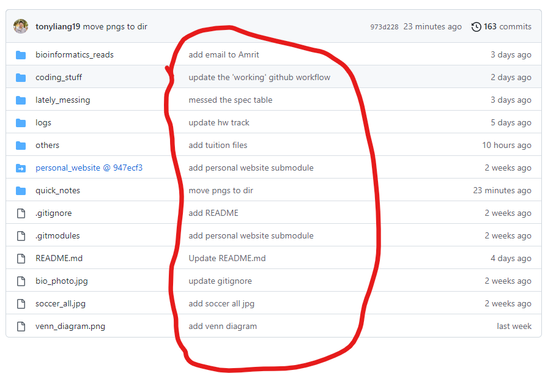

Git
This page will explain some very frequent usage of Git and solutions for common known issues.
Usual Workflow
Edit your .gitignore frequently, track stuffs that needs version control, but not those are confidential like secrets, credentials. Moreover, keep your files below 100MB each as possible. And you will be doing the following a lot:
git add .orgit add <path_to_dir-or-file>.- The first one is to add everything to ready for commit, use it carefully, sometimes you don’t want to add everything (as mentioned above)
- If you need to add dir itself that is another git repo, go to this section
- use
git add -f <file>if you have to add a file mandatorily, usually this is applied in ignore folders, but certain files likeREADME.mdwithin that dir need to be included.
git commit -m "any meaningful message within this quotation", the message is for you to know what have you done in one commit (or checkpoint if you prefer this), likeupdate README.md,looping in a bug, fix later- The message is then fixed to the file that you committed with like below:  As you can see, the circled red is all messages that’s accompanied by the file modified in that commit particularly.
git push <branch-name>orgit push -u origin <branch-name>.- The first one is to tell which branch you want to push the commit(s) onto github.
- The second one is usually done for a first time created branch on local, meaning that’s likely not on the remote yet. So, this essentially tells git, if the
<branch-nameis not on remote yet, create it on the remote, and set the localbranch-nameto track this upstream remote branch (meaning everything time you switch into the local branch, by default it tracks the same remote branch on github for pull/fetch/push)
Adding a git repo inside another git repo
Say you have a big repo that contains many other sub-repos, this is called a git submodule, whereas you could have like a following structure:
Big_repo
|------- Sub-repo 1
|------- Sub-repo 2
|------- .....
|------- Sub-repo nThis allows you to version control within each the sub-repo with its own history, and the Big_repo just gives you access to each the repository link of it as shown below:

Where each of the blue highlighted are a sub-repo, that links to another GitHub repo (that you can actually click on it! :blush:), the xxxxxxx next to the link is the hash of latest commit of that repo.
To add submodules, you required the sub-modules to rely within sub-directories of the major repo, and use below:
git submodule add <remote-link-of-sub-repo> <local-path-to-the-sub-repo>
Changing SSH to HTTPS or Vice-versa
If you want to change from HTTPS to SSH, i.e. you want to see the remote url link not just ssh. Or the other way round, when you are sick of authenticating over and over again using personal access token (PAT). Use the following to config the .gitconfig file:
git config --global url.https://.insteadOf git:// + This tells Git to automatically translate any remote beginning with git:// to remote beginning with https://
git config --global url.git://.insteadOf https:// + This tells Git to automatically translate any remote beginning with https:// to remote beginning with git://
To do sanity check, use to following command to check the .gitconfig file has updated correctly:
git config --global --list, this list all options/configurations that you have, and NOTE, this file affects all git repos you have locally on your laptop/computer. And it should like the below:

And ,this is the file itself 
Hub CLI
This hub is a command-line-interface (CLI) made by GitHub, that allows to do almost everything of git and GitHub without leaving the terminal, for example, this allows to create a repo on GitHub, add issues, and many mores.
Creating a repository
You might be tired of creating empty repositories on GitHub that need to leave your favorite terminal and use the mouse? Why not just do everything with your terminal :smirk:
NOTE: For the first time using this, it might asks you for credentials like github username and github password, but actually you need to put in the Personal Access Token(PAT)
If you don’t know how to add it, look at here
Follow these steps: 1. cd into the directory you want to be a git repo 2.hub create -p or hub create + This creates a GitHub repository NOT git (this is done in step 1) + The first one creates the repo as private-only (only you have access) + The second one is standard public repo + Note: it creates an empty repo with no README or .gitignore templates, you might need to add more options to the command above
And it should look like this:
The https://... is the actual url to the github repo created, try copy that to your browser, and see what’s in there, then you can just follow the instructions on that website or here
Edit hub config
This teaches you how to edit the hub cli config file, that should live on this path, ~/.config/hub, where ~ assumes to be your $HOME. And the file itself looks like this:

Where you could find your github username, github PAT (The light blue highlight I have here), and whatever protocol you use (default is https, and apparently it only supports https? You could verify that if you wish to know more)